Web exclusive essay | Printable version (PDF)
© 2020 Stanford University Chinese Railroad Workers of North America Project
HILTON OBENZINGER
Stanford University
Connie Young Yu took long strides across the stage and across history at the Golden Spike 150th anniversary commemoration at Promontory Summit to give the opening address, Utah on May 10, 2019. “Greetings,” she began, addressing an estimated 20-30,000 people. “I am a descendant of a Chinese railroad worker, an American, speaking about American history.”
“My great-grandfather, Lee Wong Sang, was one of the thousands of unsung heroes, building the railroad across the Sierra Nevada mountains, laying tracks through to Utah, uniting the country by rail,” she explained. “Many descendants of Chinese railroad workers are here today. This is a far cry from 50 years ago. At the Centennial in Promontory, May 10, 1969, my mother, Mary Lee Young, was the only such descendant present.”
Connie Young Yu spoke for all the Chinese who had been excluded or forgotten from the official memory of the United States. She spoke as well for those who were literally, physically excluded due to laws put in place starting in 1882 to prevent Chinese from becoming citizens or even coming to the U.S. Her speech was an important moment, a marker in the transformation of attitudes since the Centennial in 1969. At that 100th anniversary Golden Spike ceremony at Promontory Summit, U.S. Transportation Secretary John Volpe delivered the major oration, praising the historic accomplishment of the railroad builders: “Who else but Americans could drill ten tunnels in mountains 30 feet deep in snow? Who else but Americans could chisel through miles of solid granite? Who else but Americans could have laid ten miles of track in 12 hours?” No mention of the Chinese who composed 90 percent of the Central Pacific’s workforce and who actually did accomplish Volpe’s list of wonders – and who were denied the ability to become citizens.
Philip Choy and Thomas Chinn, representatives of the Chinese Historical Society of America (CHSA), sat shocked and outraged. The CHSA had prepared two commemorative plaques in English and Chinese to be placed in Sacramento and at the site of the Golden Spike ceremony to honor the Chinese who actually did most of the work to cross California’s Sierra Nevada Mountains and the desserts of Nevada and Utah. Phil Choy was scheduled to speak and introduce the plaque, hoping to correct the historical erasure, but the event organizers suddenly stopped Choy from speaking because an unexpected special guest had to be accommodated. The guest turned out to be the actor John Wayne – and the Chinese workers were once again pushed aside, this time for an icon of white Western hyper-masculinity.
“The Centennial was a grand moment to celebrate the monumental achievement the Chinese were part of,” Connie Young Yu observed. “Yet why were the Chinese denied their rightful place in history at the 100th?” She went on to explain, “The contribution of the Chinese to the Transcontinental was kept from national memory. The exclusion law of 1882 stopped the immigration of Chinese laborers, and denied all Chinese naturalization to U.S. citizenship. In effect for 61 years, the law excluded the Chinese from American history.” But she ended her speech with a momentous statement: “Today we take this opportunity at the 150th to reclaim a place in history.”
How could so many Chinese workers be rendered invisible? Secretary Volpe’s boast that “only Americans” could accomplish such a feat was not an aberration. “American” meant “white.” The omission of the Chinese may have seemed strange in 1969, with the recent advent of the Civil Rights and Asian American movements and the drive to re-examine U.S. history from far more inclusive vantage points; but it was a long-standing tradition, starting long before the Golden Spike: native-born Anglo-Americans regarded the construction of the transcontinental railroad (and other projects they called “internal improvements”) as their accomplishment at the time and not that of the immigrants who actually labored to build it. As Ryan Dearinger in The Filth of Progress: Immigrants, Americans, and The Building of Canals and Railroads in the West observes, the Chinese, along with others who worked on canals and railroads such as Irish immigrants, “were the voiceless, invisible beasts of burden” that, once the work was done, could be forgotten, excluded from the national imagination.1
The Chinese workers were not forgotten in 2019. Thousands of participants gathered in the high desert where we witnessed the re-enactment of the “Golden Spike” ceremony that marked the completion of the nation’s first transcontinental railroad. In that crowd were thousands of Chinese Americans along with visitors from China, and among them hundreds of descendants of Chinese railroad workers. They were eager to hear Connie Young Yu recognize their ancestors’ hard labor.
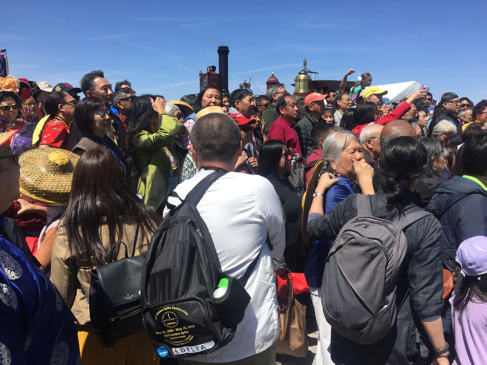
The occasion was festive, with jet fighter fly-overs, military presentation of the colors, the national anthem, and food stalls selling tacos and Vietnamese sandwiches and other delicacies of America’s multicultural cuisine. Before the speeches a musical theater company sang and danced for a Walt Disney-type musical extravaganza, As One. The musical was mounted in front of the two locomotives facing each other, as in the original iconic Andrew Russell photograph “East and West Shaking Hands at Laying Last Rail.” The lively production was anodyne and tuneful, as one would expect of a Disneyesque musical. The show spun the story of building the railroad in song-and-dance fashion, with Chinese and Irish workers in costumes, a racially diverse group of school-kids for the group numbers, and women dancing as prostitutes. (The theatrical piece was trying to be historically accurate, depicting the women who entertained the workers in the Hell on Wheels saloons that followed in the wake of the Union Pacific construction.) A Native American stood in stoic pose. The upbeat theatrical romp introduced the general theme of inclusivity that the speakers would incorporate in all of their orations.
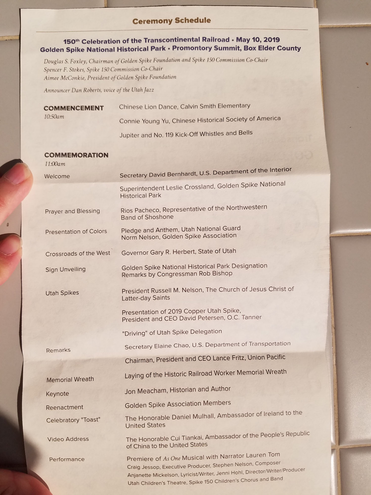
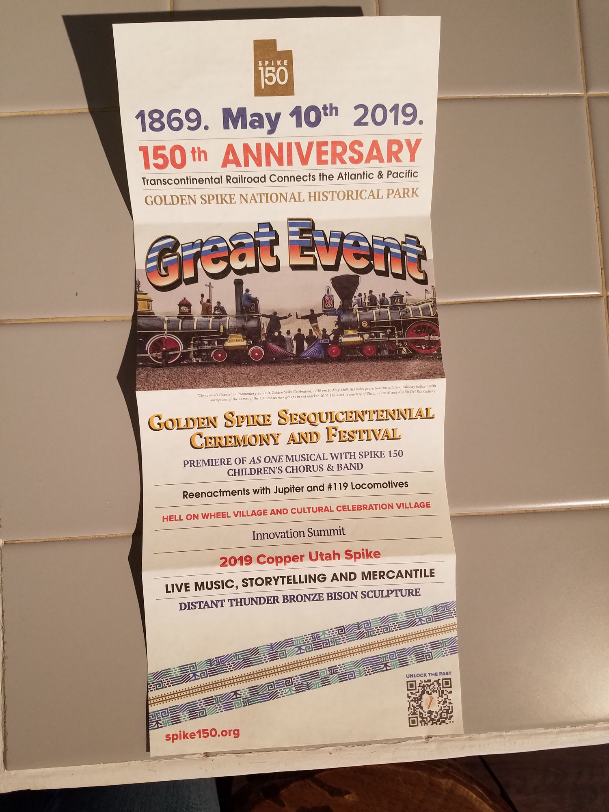
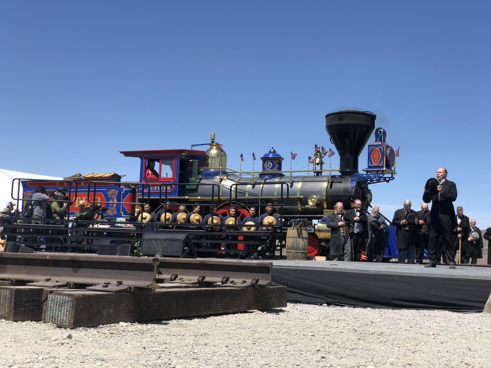
An array of politicians attended the commemoration. Many spoke to the assembled thousands, including Utah Governor Gary Herbert, U.S. Secretary of the Interior David Bernhardt< Utah Lieutenant Governor Spencer J. Cox, U.S. Senator Mitt Romney, U.S. Senator Mike Lee, former U.S. Senator Orrin Hatch, U.S. Congressman Rob, as well as Russell Nelson, the president of the Church of Jesus Christ of Latter-day Saints. President Nelson expressed the sentiments of the other speakers, saying that the transcontinental railroad was an example of what can be accomplished when “we join hands.” He regarded the sweep of all the people involved: “the thousands of Chinese and Irish immigrants, the newly-freed slaves from the southern states, the veterans who had fought so recently in the Civil War, the members of The Church of Jesus Christ of Latter-day Saints who were trying to settle in this harsh land, the Native Americans, whose land was forever altered, and the many immigrants from Italy, Germany, and other places that came together to build this railroad that crossed our vast country,” he said. “They came together as one.”
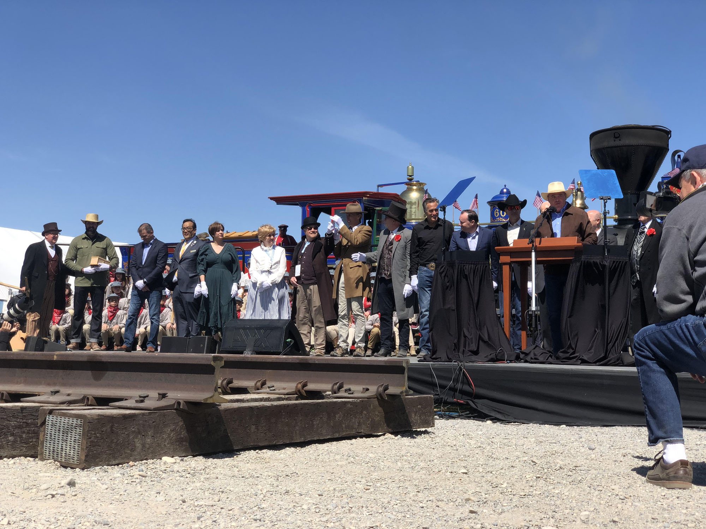
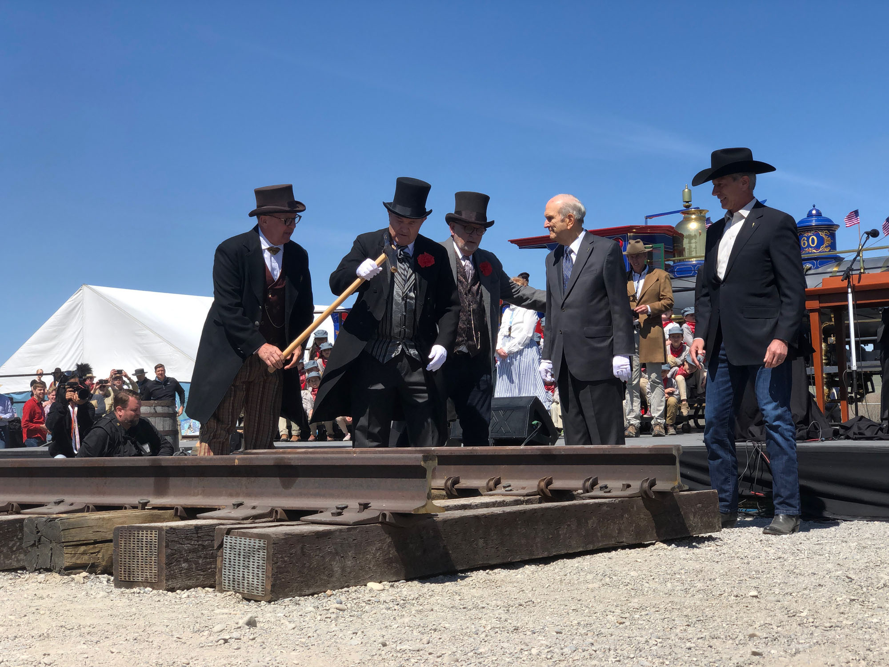
Even the ambassadors from Ireland and China spoke. Irish emissary Daniel Mulhall praised the Chinese and other workers before he hoisted a toast of what looked like a glass of champagne. The ambassador from China Cui Tiankai spoke in a previously recorded video. “This is a project of a wonder of the world that linked America together from sea to shining sea and laid the foundation for the American economic boom,” Ambassador Cui Tiankai said. “This is also a telling example of how the Chinese and American people can come together to get things done and make the impossible possible. This is particularly true today. A strong bond between China and the United States can deliver real benefits to our two countries.” A strong bond seemed more and more unlikely in the short term, at least, with tensions between the two countries ratcheting up, but the transcontinental railroad held up hope that great works could be accomplished.
“The story of the transcontinental railroad is the story of America for better and for worse,” Pulitzer Prize-winning historian Jon Meacham said. “Both are stories of ambition and of drive, of vision and of unity, of hope and of history.” Meacham also brought out what had been unspoken amidst the acknowledgement of the accomplishment – finally. Everything was not rosy. Meacham recognized that the ceremony came at a time of political division once again, not quite the division of the Civil War, but close enough; he called for the country to be honest about our history. “We should not sentimentalize the American experience. The nation has been morally flawed — often egregiously so — from the beginning. We must be honest about that — honest about the plights of African-Americans, Native Americans, of women . . . of immigrants and our honesty should lead us to do all that we can to be about the work of justice.” Elaine Chao U.S. Secretary of Transportation gave the featured address of all the political figures. Her simple presence marked the change from 50 years ago: “As the first U. S. Secretary of Transportation of Chinese ancestry,” she declared, “I have the unique and moving opportunity to fully acknowledge and recognize the contributions and sacrifices of the laborers of Chinese heritage to the construction of the transcontinental railroad.” The deep irony was not lost on the crowd that this time the Secretary of Transportation was “of Chinese ancestry” even with the conservative and anti-immigrant thrust of the current administration. “We pay special tribute to the diverse workforce that built this seminal project,” Chao hailed them all. “Civil war veterans from both the North and the South worked together on the transcontinental railroad, along with Mormon settlers, African-Americans, native Americans, and, of course, Chinese laborers.” This “of course” was not so easy to acknowledge for decades, and her comment was laden with the bitter history of 150 years of invisibility.
After the formal program came The Photograph. For several years, photographer Corky Lee has gathered together Chinese Americans to pose in front of the two locomotives facing each other, replicating the iconic scene of Russell’s “East Meets West” photograph. There were no Chinese in the 1869 photograph, except for perhaps a couple of blurry backs and a hat held in front of a face that could have been Chinese. The absence of Chinese from Russell’s photo was one more hurt in the history of invisibility, and Corky Lee (and other photographers) set out to correct the representation, and hundreds gathered in front of the locomotives for what has become the ritual photo shoot, with many photographers shooting the scene. This attempt to visualize a different narrative was one more act to “reclaim a place in history,” to use Connie Young Yu’s phrase. It was chaotic at this year’s scene, but the crowd was able to gather, again.
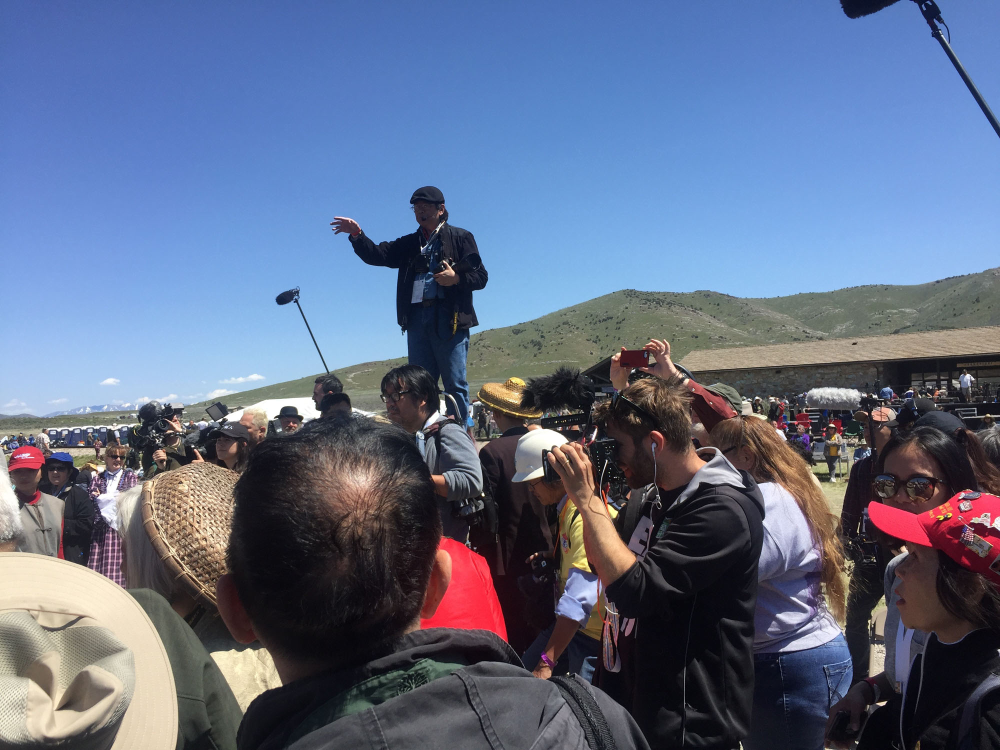
Of the many other activities that revolved around the 150th Golden Spike Celebration, the most significant was the 2019 Golden Spike Conference by the Chinese Railroad Workers Descendants Association (CRRWDA). The conference was held in Salt Lake City from May 8 to May 12, straddling the May 10 commemoration, and featured a wide range of activities, celebrations, tours, history panels, drama, musical comedy, and more. Descendants and their friends asserted the place of their ancestors in the 150th Golden Spike anniversary, and their place as part of the United States, despite all the efforts at exclusion. Organizing for the conference brought descendants from around the U.S. and drew Chinese American community leaders from around the country. Utah State political leaders, such as the governor, sent letters of support, and the mayor of Salt Lake City welcomed the conference in person. Major corporations such as Delta Airlines and organizations such as AARP were sponsors.
CRRWDA’s Chairwoman Margaret Yee and President Michael Kwan welcomed the conference attendees at the opening night session. Michael Kwan is a judge in Utah; his railroad-worker ancestor could have hardly imagined his descendant testifying at a trial much less rising to be a judge in the American West. Several speakers throughout the conference highlighted the community’s achievements in U.S. society, and how deeply rooted, such as the keynote for the opening night, Major General William Chen, the first Chinese American to reach two-star rank, son of a pilot under Gen. Claire Chennault who flew against the Japanese in China and Burma during World War II. U.S. Secretary of Transportation Elaine Chao embodied the entry of the community in the top rungs of U.S. political life and gave a preview of her speech at the ceremony.
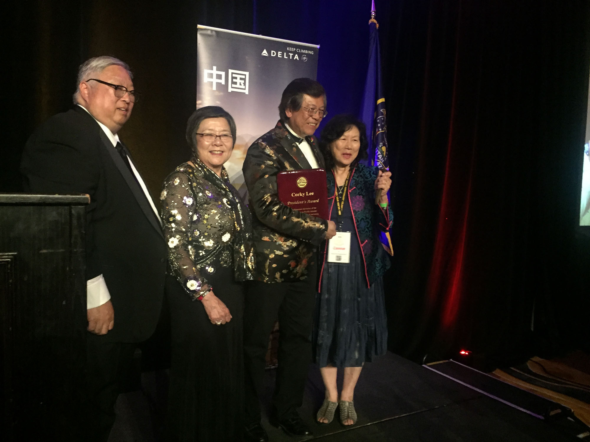
Part of the conference was a journey to Ogden for Union Pacific Railroad’s event featuring the newly restored “No. 4014 Big Boy,” the largest operational steam locomotive in existence, and the next day, May 10, buses were organized for the ride to Promontory Summit for the Golden Spike commemoration. In advance of the conference there were performances of David Henry Hwang’s “The Dance and the Railroad,” and during the conference the musical Gold Mountain by Jason Ma.
Panels by academics elucidated different aspects of the railroad workers’ experience, as diverse as Barry McCarron on “The Experiences of Chinese and Irish Workers” and Joseph Ng on “Wealth Creation East and West: Effect of Social Network and Political Power” and a presentation by Hilton Obenzinger on the 1867 strike of the Chinese railroad workers. Denise Khor gave a talk on photography and the railroad, and a panel of historical archaeologists offered views of the lives of workers from what could be found at worker campsites.
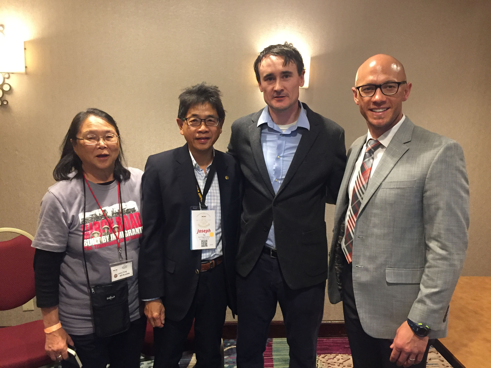
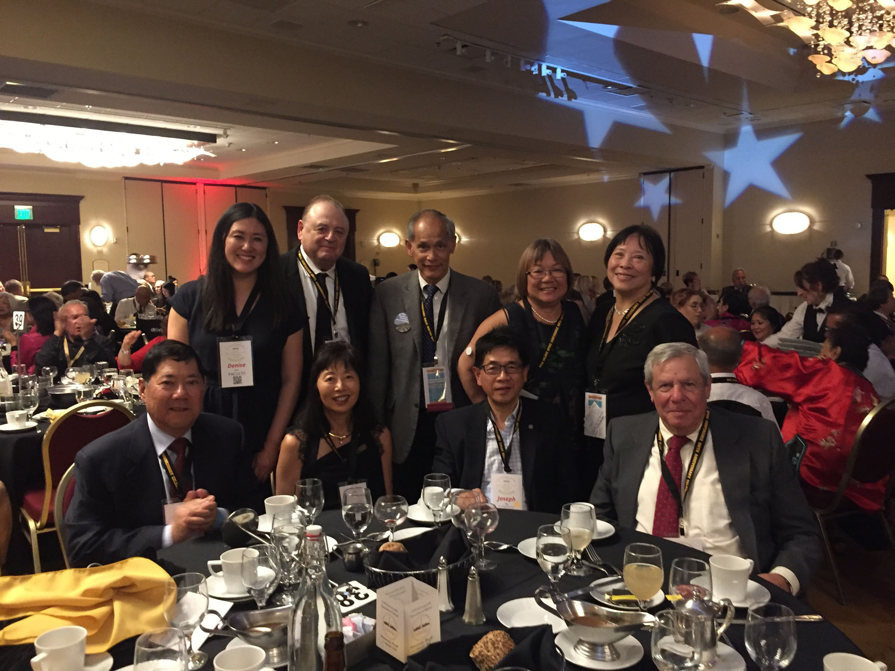
Frank H. Wu, professor at UC Hastings Law School, gave a plenary talk tracing the history of the Asian and Chinese American movements, ranging across exclusion, the Vincent Chin murder in the eighties (at the height of anti-Japanese paranoia, the young Chinese-American man was beaten to death by white autoworkers who mistook him for Japanese), the rise of China, and how Chinese are both praised as a “model minority” while still regarded as foreigners who are targets of exclusion and suspicion no matter how many generations families may have lived in the U.S. The sweeping talk was energized by the way Chinese and others came together to acknowledge the railroad workers, the sense of growing community awareness and assertiveness.
Gordon H. Chang, co-director of the Chinese Railroad Workers in North America Project, gave a plenary talk on the Chinese workers and the railroad at the Utah State Art Museum on the University of Utah campus, where there was an exhibition of historic photos of the railroad. Before the conference, on May 7, Shelley Fisher Fishkin, co-director of the Project, gave a lecture in Ogden Union Station, sponsored by Weber State University and Union Station. Her talk, “Listening to Silence, Seeing Absence: The Challenge of Reconstructing Chinese Railroad Workers’ Lives,” elucidated the difficulties in understanding the experiences of the railroad workers with no written texts by any of them.
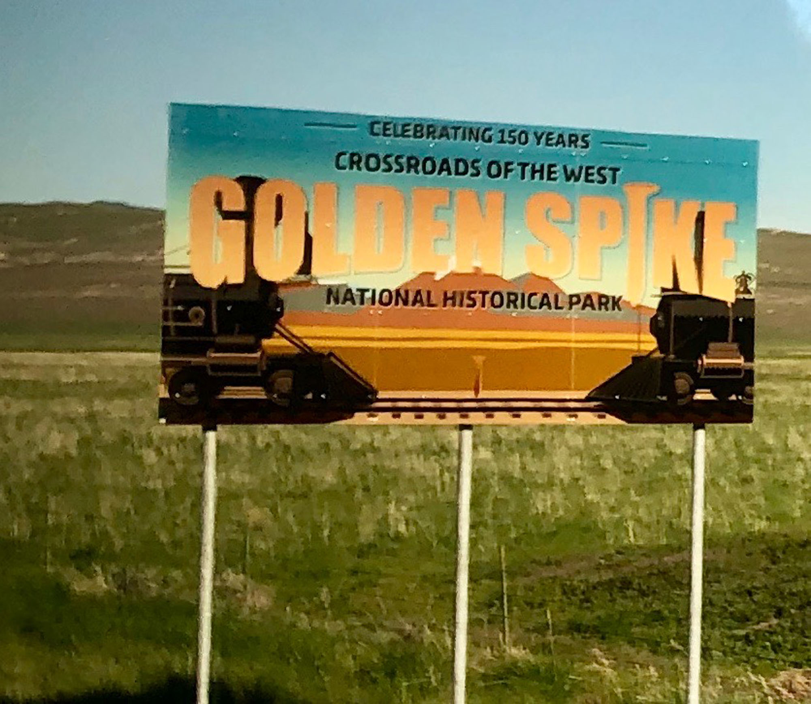
Addressing the lack of written materials, two hundred conference goers, including many descendants, participated in a two-day auto and walking tour of the old railroad grade in the high desert where the Chinese labored. The tour was arranged through the Bureau of Land Management. Guides included Chris Merritt, Utah state archaeologist, Mike Polk, of Sagebrush Consultants, and Veronica Peterson, current Harvard doctoral student and former museum registrar at Stanford University’s historical archaeological lab. All three are part of the Archaeology Network of the Chinese Railroad Workers in North America project.
Veronica Peterson writes in “Remembering the Forgotten Chinese Railroad Workers” (Sapiens, 22 Aug 2019) that the walk along the railroad grade was able:
“to help show how archaeology provides one of the clearest windows into what life was like for some ancestors of the participants . . . I had started the tour excited at the prospect of sharing archaeological knowledge with this community. But in joining descendants as they walked in the footsteps of their history, I was reminded that the past is not a static thing. It is remembered, relived, and reincorporated into modern traditions.” She was impressed by the way the fragments of rice bowls, ginger bottlers, soy sauce containers were recognized by the descendants.”2
Chris Merritt showed “that the presence of individual rice bowls, along with a lack of small cooking vessels, indicates that the residents were served from a communal dish. Heads nodded all around, as many of us on the tour had the very same type of bowls in our own cupboards.”
This sense of identification and recognition, the bonds of a community coming together, was expressed in the award ceremony over dinner during the conference, when Gordon Chang and Corky Lee, activist photographer, received awards for their many years of service to the community. It was an apt choice, a historian trying to conjure the past (author of Ghosts of Gold Mountain: The Epic Story of the Chinese Who Built the Transcontinental Railroad) and a photographer working to record the present and even change understandings of the past through photography (such as his annual May 10th group photos at Promontory Summit). Wilson and Esther Lee, of the Chinese American Heritage Foundation, left, received the Director’s Award for their work promoting the recognition, appreciation, and celebration of historical contributions of Chinese Americans.
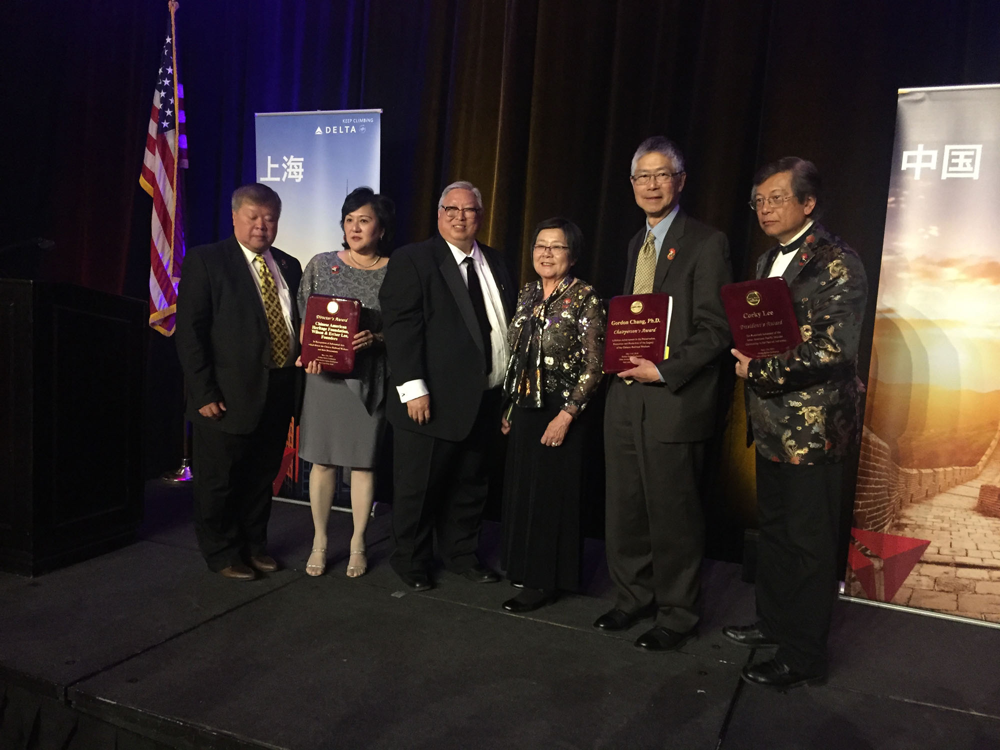
At the end of her speech, Connie Young Yu invoked the “the courage, fortitude, and sacrifice of Chinese railroad workers.” She asserted that “their legacy in America . . . involves us all.” She called upon a revision of an old saying: “It takes many a village to build a railroad.” And it takes many a village to change the public perception of history – and its implications for today.
We count the Chinese Railroad Workers in North America Project as one of those “villages” building the expanded understanding of the railroad and the Chinese. The Project began at Stanford in 2012, and by May 10, 2019 has coordinated and produced in North America and China several books, digital presentations, curricula, conferences, traveling exhibits, and other events, in the attempt to recover the experience of those workers. Although the Project did not focus on popularizing the history or organizing commemorative events, the research it conducted and coordinated provided background that made it possible for the many popular commemorations to be rooted in substance and historical fact. The Project produced two photographic and historical exhibits which have traveled around the country – one in collaboration with the Chinese Historical Society of America with Monica Arima of the Project arranging for multiple tours of both exhibits.
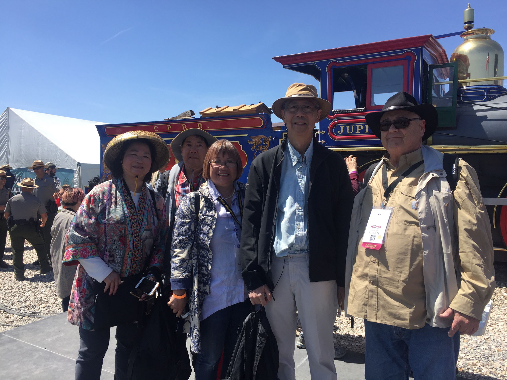
Several community-based organizations projected the recovered history of the Chinese to the broad American public. The Chinese American Heritage Foundation, sparked by Wilson and Esther Lee, created a large float (based on the image of the two locomotives in the famed East Meets West photo) to depict the Chinese building the railroad for the Rose Parade on January 1, 2019. The Chinese Railroad Worker Memorial Monument, lead by Steven Lee, gathered funds, initiated a competition for best design, and has prepared for a large heroic sculpture of Chinese railroad workers, one with sledgehammer high in the air, to be installed at the Gold Run Rest Stop in the Sierra Nevada. The US-China Railroad Friendship Association put on events to commemorate the 150th anniversary in Sacramento and other places. And, of course, the Chinese Railroad Workers Descendants Association played a major role, making sure the 150th anniversary events would shine a spotlight on the Chinese workers.
All of this composed a major breakthrough. Yet the story of the transcontinental railroad has not reached its full extent; much more needs to be unearthed and acknowledged. For example, how would a large-scale commemoration incorporate the strike in the Sierra Nevada at the end of June 1867? Three thousand or more Chinese workers laid down their tools for a week to demand the same pay given to white workers; they also demanded their workdays be reduced from eleven to ten hours, and shorter shifts digging in the cramped, dangerous tunnels. Shifts were supposed to be eight hours in the tunnels, but they were often forced to work longer. Workers grading along the eastern slope of the Sierra between Cisco and Strong’s Canyon, digging tunnels, and doing other jobs, put their tools down and stayed in their camps. This was the largest labor action up until that time, and it was a major statement, followed by Chinese workers going on strike on railroads and in different industries throughout the country, belying the notion that Chinese workers were docile.
The restive Chinese were not the only labor issue facing the railroad builders. The Golden Spike ceremony was originally scheduled for May 8, but the Union Pacific had problems with the weather and construction difficulties crossing Utah, but more importantly UPRR workers, mostly Irish, had not been paid since January 1. The workers feared that, once the railroad was completed, the owners would skip out on their pay, not an unreasonable worry. When the train carrying Dr. Thomas C. Durant, the vice-president of the UPRR, arrived at Piedmont, Wyoming, on May 7, the locomotive was stopped by ties piled across the tracks and his car was shunted to a side rail, where as many as 500 workers demanded their pay. They threatened to kill Durant if the money was not sent, and threatened to kill the telegraph operator if he called for the army. The next day the pay arrived, and Durant was allowed to proceed to the ceremony.
Labor clashes like these are hard to incorporate into curricula and events that want to celebrate the railroad as a great national myth, a demonstration of ‘Manifest Destiny’ with little appreciation of those who actually made the dream a reality or suffered as a result of it. Even more difficult to include in the historical account is the war of extermination against native tribes, particularly the Plains Indians, along with the decimation of the buffalo, mainly on the UPRR side. Most California tribes on the CPRR side were subdued or destroyed before the railroad was built; the CPRR incorporated at least a thousand Indians into the workforce in Nevada, and there is yet to be a description of their experience. During the celebration for the 150th anniversary, native people were invited to bless the event in their own language and were brought into the musical extravaganza briefly. But it’s still hard for the broad US public to address the genocide that accompanied the exploitation of migrant workers to build the railroad. We will have to see whether this new awareness – ascertaining the knowledge and experience of all participants in the largest construction project to date – makes its way into classrooms and the culture more broadly. There are good signs, though: A nascent Irish Railroad Workers Project has been formed to uncover more of their experiences, and historians of the Western United States have been re-examining the history of the indigenous tribes for some time.
Connie Young Yu’s stirring words, as she ended her speech, has set us in the right direction: “We stand on broad shoulders, my ancestors and yours, those who fought exclusion, and struggled for justice and equal rights. Let us be proud immigrants make up America. So we can have this moment of solidarity, and fortify a milestone in US history.” And she repeated the famous words and telegraph message of 150 years ago: “Hammering in the last spike. Done!”
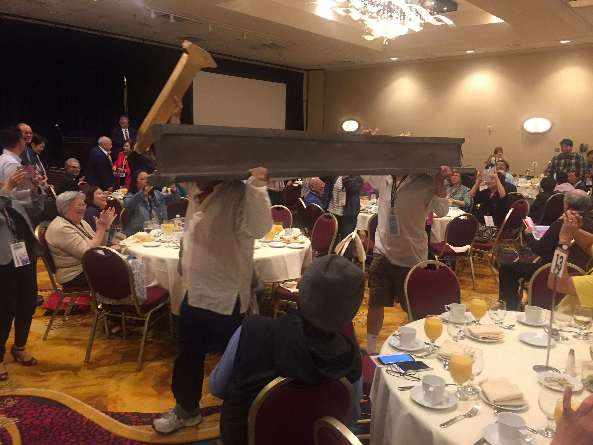
1 Ryan Dearinger, The Filth of Progress: Immigrants, Americans, and the Building of Canals and in the West (Berkeley: University of California Press, 2015), 191.
2 Veronica Peterson, “Remembering the Forgotten Chinese Railroad Workers,” Sapiens, August 22, 2019, https://www.sapiens.org/archaeology/chinese-railroad-workers-utah/.